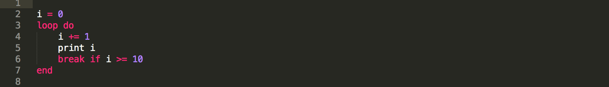
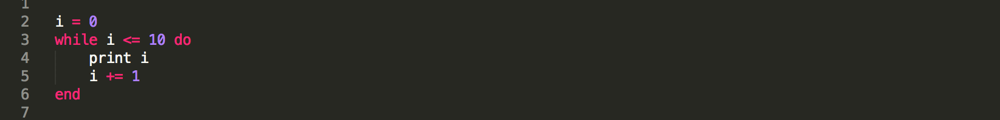
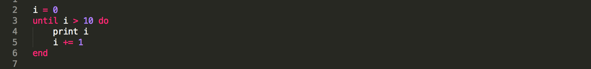
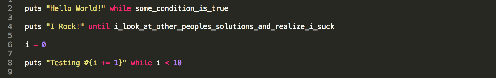
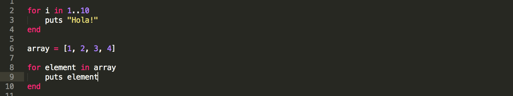
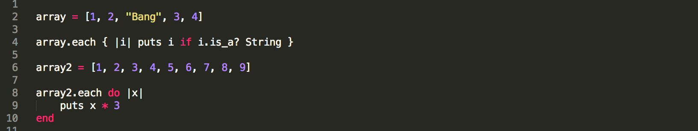
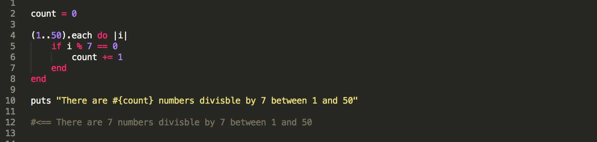
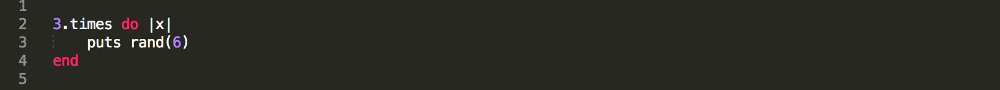

Week 4 Technical Blog - Ruby Loops
Ruby must take the crown for number of ways to loop. The Ruby landscape it ripe with a million ways to iterate over stuff. I imagine in my mind, a mom with a bag of froot loops, driving her minivan trying to hand the bag back to her two year old son in the back seat. "I only want red!", he yells at her as froot loops fall over the floor, in his seat, and on mom's lap. The blue and green loops will soon be crushed under foot by the family, the purples ones lost to the void that is the cracks of the car seats, the yellows ones rolled to the abyss under the car seats.
Ruby loops, much like froot loops, are many colors. I see myself, like the son, stuck on the red loops(each) with the occasional blue(while) or green(for) loop thrown in when my precious red loops just don't cut it. And don't get me started on the yellow(until) ones, who could ever want to use that?!
While the each method is a powerful tool and a great go to looping method, I can't help but wonder what else I'm missing out on. In today's blog we'll explore some Ruby loops and when to use them.
Loop/While/Until
We'll start with the simplest of loops. The loop. It doesn't get much more simple than this for loops. The syntax looks something like this.

The basic loop is great for looping when you don't know exactly when you need to stop looping. The condition to break out of the loop can be just about anything that evaluates to true or false.
The while loop is pretty much the same as the loop. In fact, you can interchange the two with minimum effort. In the while loop we check our condition after the while declaration. You can still use break in the block but it's not required. Here is what the while syntax looks like.

The while loop, like loop, is great for looping when you are not sure when you will need to exit or break the loop. A great example would be a terminal program where you wait for a users input before performing a task. You could repeatedly ask the user for input until they give an exit command.
Until follows the same syntax as while but test the reverse condition. So instead of saying while something is true, we say until something is true. Here is what that looks like.

A word of warning! Loop, while, and until are easy to turn into infinite loops if you are not careful and we all now that can crash things in a hurry.
It's also important to point out that you can use while and until loops as modifiers at the end of a statement much like what you can do with an if statement. This has an added bonus of shortening code to a single line and can often makes things a bit easier to read. Here is what that looks like!

The For Loop
The for loop is the next stop on our tour of Ruby Loops. The for loop is our introduction to a more structured way of looping. The for loop is great when you know exactly the number of times you need to loop or iterate over something. You can also use ranges in for loops. Here is what that looks like.

Each
Each is our next stop. Each is a method that is built on top of the for loop construct. Each is available on types such as Array and Hash. Each is used heavily. I would almost be willing to bet that it is used more often than any other looping technique as it provides a convenient way to manipulate or pull data from the object your iterating over. Each is a go to loop. Here is what that looks like.

Each can also be used on ranges and provides a great way to quickly do some neat stuff

Times
The times method provides a quick way of doing a for loop based upon an number. A good example where this could be useful is on repetitive tasks where you don't want to have to repeat yourself. Need to get a random number 3 times in a row? Why not use times to save yourself some time. Here is what that looks like.

Conclusion
There are so many ways to loop and iterate over data in Ruby that I don't have the time to cover every last loop and method that uses some kind of loop. I would strongly suggest you do some research and experiment with different types of loops. I've listed some resources below for further study.
Thanks for stopping by and reading.
Resources